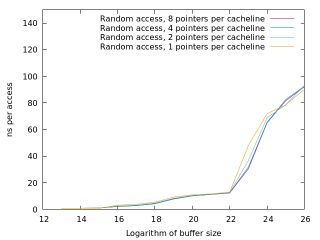
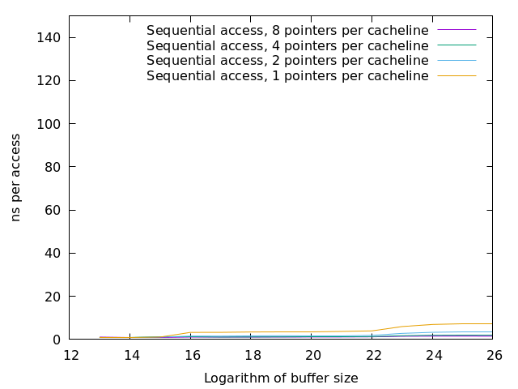
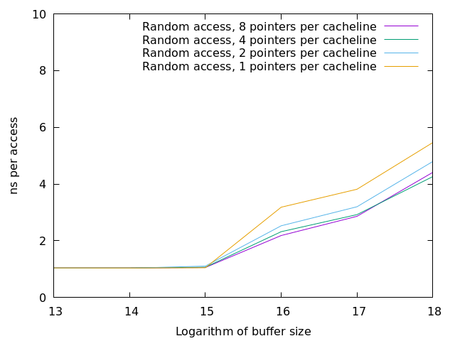
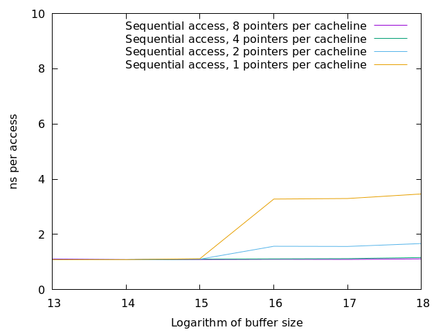
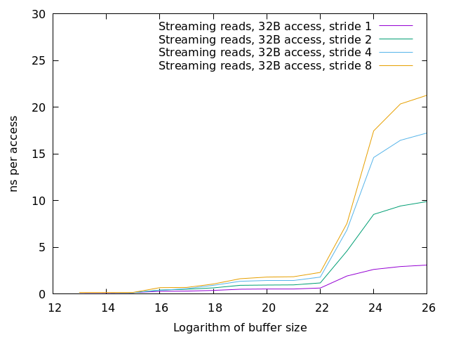
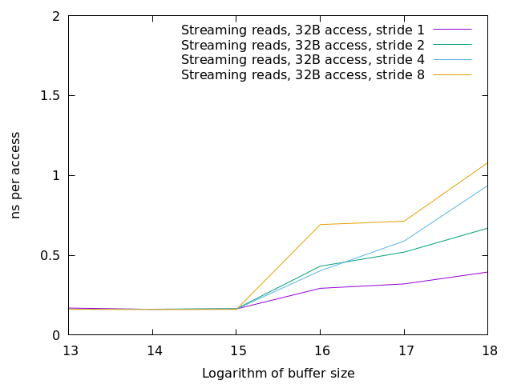

Architecture
This part gives an overview of computer architecture including common implementation techniques and how to adapt code to get the best performance from them.
Architecure, instruction set architecure, and micro architecture
The instruction set architecture, or ISA, of a machine defines the semantics of machine programs. It is the only information needed to produce correct programs.
The same ISA can be implemented in many different ways, for instance with or without caches and with different types and sizes of caches. These implementation choices, at least in their overall structure, is often referred to as the micro architecture of the machine.
This leaves the term architecture somewhat vague. Sometimes, as when one talks about “the x86 architecture”, it refers to the ISA. On the other hand, courses and books on “computer architecture” often devote most of the space to discussions about micro architecture.
Tip
While this lesson does not have many practical concepts, you can play with architecture simulators such as “Gem5”. (open source) and “Intel Simics” (proprietary, but free for researchers) that allows you to work with memory hierarchies and different CPU features, such as prefetching and multicore, while running your own program, and therefore being able to see the performance of a code in more detail.
Introduction to computer architecture
A computer is a device that executes a machine code program, with each major family of processors having its own machine language or architecture. A machine code program is a sequence of instructions, which are executed one at a time and by default in the order they occur in the program.
Every architecture includes
instructions that redirects execution to a different part of the program rather than
the next instruction, thus changing the flow of control. Some instructions, called
conditional branches evaluate a (data dependent) condition, jumping to another
part of the program if the condition is satisfied, otherwise proceeding to the
following instruction. These correspond to, and are used to implement, control flow
statements like if, for, and while in high level languages.
Other common kinds of instruction include arithmetic on integers and floating point numbers of different sizes, logical operations such as and, or, and xor. There are typically also instructions for moving data around.
Instructions work with data stored in memory, registers, or included in the instruction itself. Most of the data used by a program is stored in the main memory which contains up to many billions of data items and is similar to a large array. Each location in memory has its own unique address (corresponding to an array index) and is read or written to by memory referencing instructions using this address. Main memory is almost always implemented using separate chips rather than being included in the same chip (die) containing the processor itself. Thus the same (type of) processor can be used together with different amounts of memory.
In contrast to main memory, the processor registers are an integral part of the processor and are implemented on the same die. Architectures feature anywhere from a few (old variants of the x86 architecture) to a few hundred (the IA64 or Itanium architecture) registers.
Each processor register contains a single item of data. In current architectures, registers are either 32 or 64 bits in size, so a register can hold a single integer or floating point number. In most architectures, the register set is divided into general purpose registers containing integers (including memory addresses) or similar data, and floating point registers. Since the introduction of MMX in 1997, there has also been registers containing vectors of scalar data elements. These SIMD registers are typically larger still, with sizes up to 512 bits.
The x86 register set
Recent variants of the venerable x86 architecture feature the following general purpose registers, all 64 bits:
RAX, RCX, RDX, RBX, RSP, RBP, RSI, RDI, R8, R9, R10, R11, R12, R13, R14, R15
The floating point/SIMD register set depends on architecture variant in a rather fine grained way. The code examples for this lesson were developed on a machine supporting the AVX256 variant which features the following SIMD registers, all 256 bits:
YMM0 - YMM15
Intel has kept the x86 architecture family largely backwards compatible, and as there is a need to work on older and narrower data types, old assembly syntax is used to refer to these. Thus, for 32 bit operations one sees EAX rather than RAX, ECX rather than RCX and so on. The new registers are R8D for the lower half of R8 and so on.
Instruction level parallelism
Logically, the processor executes the program one instruction after another, in general according to the following steps:
Fetch (read) the instruction from memory.
Decode the instruction.
Fetch operands from memory and/or registers
Do the operation.
Write the result to memory or registers.
In practice, step 3 may contain several sub steps if it involves a memory access since in that case an address must often be read from a register or even computed, for instance by adding the value in a register to a constant included in the instruction.
The address to read the next instruction from in step 1 is typically kept in a register called the program counter (or PC). A branch (control transfer instruction) writes the address of the branch target into the PC while other instructions just increment the PC by the size of the instruction.
A machine that did these steps for one instruction at a time would be quite slow, and would also utilize the various hardware components of the processor very inefficiently since for instance the instruction decoder would only be used for a fraction of the time taken to execute an instruction. Thus all modern processors overlap the execution of multiple instructions in an assembly-line-like fashion, a techique known as pipelining.
When one instruction writes its result (step 5), the next instruction executes (step 4), the one after that reads its operands (step 3), and so on. Hence the processor will at any time work on several instructions in parallel.
Exercise
Take a moment to think about the challenges posed by this approach when it comes to implementing exactly the same behaviour as an implementation that executes all the steps for one instruction before starting with the next one.
Solution
There are problems with dependencies. Each instruction must execute as if all previous instructions have already executed and no subsequent ones have. This creates several challenges:
If a branch instruction updates the PC in the last step (step 5), four instructions that follow the branch in memory but should not be executed are already in various stages of processing. Care must be taken so that they do not affect the execution of instructions at the branch target.
If one instruction computes a value and writes it to a register and the next uses that value, the second instruction will read that register (step 3) while the first performs its operation (step 4) and before the new value is written to the register (step 5), thus reading the old value, which was not the intention.
Dependencies
Dependencies constrain the order a set of operations can be executed in by requiring that one operation be executed after (or in some cases not before) another. There are three main kinds of dependencies that are related to data:
An operation that uses the result of an earlier one must wait until the result of the earlier operation is available:
x = y + 1; z = x * 3;
The multiplication cannot start until the addition is finished.
This is called a true data dependence and there is no way around it.
An operation may not overwrite an input to an earlier operation, so it cannot start before that earlier operation:
x = w + 1; w = z * 3;
The multiplication must not write its result before the addition has read its operand.
This is called an anti-dependence since the read is before the write, in contrast to the first case. Anti dependencies can sometimes be removed by renaming, rewriting the program to use another variable either for the read (and earlier writes) or for the write (and later reads).
An operation may not overwrite a later write so it must finish before the later operation finishes:
w = y + 1; w = z * 3;
The addition may not make its write after the multiplication makes its write.
This is called an output dependence and may seem silly; why do the addition at all? But if the two operations are array accesses, for instance, it may be difficult to tell if they are to the same element.
Often, there will be a use of
win between the two writes, and then we will have a dependence from the addition to the use and from the use to the multiplication, subsuming the output dependence which becomes redundant and can be ignored.
These dependencies turn up both in the area of compilers and in the area of computer architecture where they sometimes are referred to as hazards. The following table gives the correspondance:
In compiler |
In architecture |
|---|---|
True data dependence or flow dependence |
Read After Write, RAW |
Anti dependence |
Write After Read, WAR |
Output dependence |
Write After Write, WAW |
Modern processors go a lot further than this simple model of pipelining. First, some of the five steps may be divided into several sub steps, and these sub steps are them selves pipelined, increasing the number of stages to close to twenty in practice. While all kinds of instructions flow through the early part of the pipeline (instruction fetch and decode, steps 1 and 2) in the same way, reading operands from registers is much faster than reading them from memory, so step 3 will have different number of stages in these cases.
The same holds for the execution stage, where an integer add will typically be a single stage while a floating point add might be three or four stages since it is a much more complicated operation.
Second, not only is the pipeline deep, it is also wide, with multiple instructions flowing through it “side by side”. On every cycle, multiple instructions are fetched (up to four or five in current processors). This feature was previ
Out of order issue
In order to understand how a modern x86 processor core executes instructions, it is useful to think about the (dynamic) instruction stream which is the sequence of program counter values that we would see in a one-thing-at-a-time non pipelined processor as it executes a program. Because of conditionals, the instruction stream of a program may not contain all the (static) instructions in it, and because of loops and procedures, it can be very much longer. If you record the instruction stream as a data structure, you get a trace of the execution.
One way of thinking about the instruction stream is as a program where all loops were unrolled and all subprograms inlined and every (unrolled or inlined) instance of a conditional is correctly predicted, as if by an oracle, and the non-taken alternative eliminated.
A modern x86 implementation (the same holds for high end ARM as well) is divided into two parts:
The front end, which fetches and decodes instructions from memory.
The back end, which accepts instructions from the front end and executes them. Here is where we find for instance the functional units and the registers of the processor.
The front end and the back end are kept as independent as possible. The ideal would be that the front end simply feeds the back end the dynamic instruction stream with no synchronization. Conditional branch instructions are an obvious problem here: comparisons depend on data and are executed by the back end and indirect branches transfer control to an address stored in a register or in memory (think of jump tables for implementing switch statements or subroutine returns).
One possibility would be for the front end to stop fetching instructions when a (conditional or indirect) branch is encountered. That would lead to a dramatic loss of performance since branches often makes up ten percent or more of the instruction stream and the delay from when the back end has decided if and to where control should be transferred, until the new instructions can be executed by the back end is often on the order of twenty cycles.
Instead, the front end uses various forms of branch prediction to be able
to continue fetching instructions based on the recent history of the various (static)
branches. Branch prediction has evolved dramatically over the years and now
provides correct predictions almost always for programs dominated by for loops.
Branches that do not behave according to a simple pattern that the branch predictor
can latch on to will often be mispredicted, however.
Tip
Types of branches that are easy to predict:
Branches that very often do the same thing as last time it was executed.
Loop ending branches for long trip count loops (almost always taken).
Branches that check for uncommon conditions (error checking).
Branches that behave consistently during each phase of the program.
Loop ending branches for loops with the same, short, trip count (the branch predictor keeps track of the number of taken branches between each not taken).
Branches that are taken every other time.
Subroutine returns; the branch predictor keeps track of the (topmost part of) the return stack.
Indirect branches that go to the same target several times in a row.
Note also that if there are many branches in the program, those that are infrequently executed will probably have their history knocked out of the branch predition tables (they are a kind of caches) so they will get no predictions.
The back end then executes the instruction stream using as much parallelism as possible. Current x86 back ends can execute as much as four or five instructions per cycle, but since some of the functional units (memory access and floating point operations, in particular) are pipelined, the back end needs to find somewhere around 10 to 20 independent operations to maintain a flow of four to five instructions per cycle.
Latency and throughput
These concept play important roles in computer architecture:
- Latency
The shortest possible time between the start of an operation and the start of an operation that depends on the first one (typically because it needs the result of the first operation). The latency typically depends on the first operation but may in some cases also depend on the second.
- Throughput
How many operations (of some type) that can be executed per unit time. An operation can belong to several types, in which case the lowest limit applies.
For instance, a processor may be able to execute four instructions per cycle but only two memory references, so if every instruction in the instruction stream includes a memory reference, the resulting throughput is only two instructions per cycle.
Throughput depends on both the number of units available for executing the operation and how often a unit accepts a new operation. Most compute units are fully pipelined and accept a new operation every cycle, but for instance divide units tend not to be pipelined and may thus only accept a new operation when the previous one is finished, which may take perhaps ten or more cycles.
If we have an operation with latency \(L\) and throughput \(T\) we will need \(L \times T\) independent operations to fully utilize the resources of the machine. For instance, if we can do two floating point operations at a time and their latency is four cycles, we need at least eight independent floating point operations to keep those units busy.
Within the processor core, the clock cycle is the most common unit for measuring time since everything inside happens in sync with the clock. But some interesting things are driven by other clocks. In particular, this is true of memory references which depend on how fast the DRAM chips are clocked. This clock typically runs on a constant frequency while the core clock is varied by DVFS to balance performance, energy consumption and heat generation. Hence it is often useful to think about the memory in terms of (nano) seconds rather than (core) cycles.
The back end handles this parallelism using an instruction scheduling unit in the processor hardware. This unit stores nformation about instructions that have been delivered by the front end but not yet executed. For each instruction, the scheduler keeps track of the instructions it depends on. For each source operand that is not yet ready, the scheduler keeps track of which instruction will produce the value. This handles the true data dependencies; we will get to the anti and output dependencies later.
When an instruction is about to produce its result, all instructions (in the scheduler) which will use that result checks to se if it was the last thing they were waiting for. If it was, they become ready for execution. There might be more ready instructions that needs a certain kind of functional unit (say, a floating point multiplier) than there are units of that type available; in that case some instructions have to wait. When an instruction is sent for execution, its entry in the scheduler can be reused.
The scheduler is a rather expensive (large and power hungry) part of the processor, so there is a trade off between its cost and its size and flexibility. For instance, entries may be general so that they may contain any instruction or specialized with respect to the functional units it serves.
If we think about how this kind of back end executes the instruction stream, we can note that there is in general an early part of the stream that is completely processed. Then comes the earliest not finished instruction and a mix of executed and not executed instructions until we get to the newest (latest) instruction to have been delivered by the front end. Then comes the instructions that have not yet reached the back end.
We will call the middle portion of the instruction stream the current instruction window. The significance of the window is that the window moves through the instruction stream in order; instructions enter the window in the order they occur in the stream and they exit in that same order. Within the window, however, they will in general execute out-of-order with respect to stream order.
It should come as no surprise that the account up to now is simplified, so we will discuss briefly a couple of complications. The first one is that we sometimes execute instructions that should not be executed.
The front end may have fetched the wrong instructions due to branch mispredictions.
An earlier instruction in the stream may have had an exception, such as an integer divide by zero or some form of memory exception. Neither of these can be detected by the front end.
Recall that we want our high performance implementation to execute the program exactly as if it handled each instruction in order with no overlap. For this to be possible we need to be able to “undo” the execution of instructions until we know that it should really have been executed. We know this when all earlier instructions in the instruction stream has executed without branch mispredictions or exceptions.
One way of thinking about this is that an instruction that has executed in the functional units needs to appear to be executed to subsequent instructions within the instruction window, but appear not-yet-executed to “the outside world”. Only when the instruction exits the current instruction window is its execution made permanent. This is known as a commit, or in Intel terminology, retirement.
For instructions that have not yet retired (so they are still part of the instruction window), this means:
No values in registers or memory may be overwritten.
No exceptions can be taken; maybe we should not have executed the excepting instruction. Consider the following, where
dis not often 0:int foo(int n, int d) { if(d != 0) n = n / d; return n; }
The branch predictor will guess that the division should be performed, so in the rare cases when
dis indeed 0, the division might be performed while the branch condition is evaluated. So the exception must be postponed until the branch is retired.
This problem is solved by a combination of techniques:
- Reorder buffer
Every instruction in the instruction window has an entry in a (circular) reorder buffer. The reorder buffer contains all information that is needed when the instruction is either undone or retired.
Note that the reorder buffer contains both not yet executed instructions, just like the scheduler, but also those instructions that are executed but not retired which are not present in the scheduler. This is because a reorder buffer entry is much cheaper than a scheduler entry.
- Register renaming
Under this scheme, the register numbers in the instructions do not correspond directly to the hardware register addresses. Instead, register numbers from the instructions are used to look up an indirection table in the instruction decoder. On every instruction that has a destination register, a free physical register is allocated and the mapping table is updated. The scheduler hardware only uses physical register numbers.
On a branch misprediction or exception, the mapping table from the appropriate point in the instruction stream (which will be within the instruction window) can be recomputed from the reorder buffer.
- Store buffers
Store instructions write their data and addresses to store buffers. Load instructions check the store buffers corresponding to earlier stores.
If the address of the load matches the address of the store and there is data in the store buffer, the load returns the data (store to load forwarding). Note that this only works when the store affects all bytes targeted by the load; for instance, if the size of the store was a single byte it cannot be forwarded to a load asking for two or more bytes.
If there is no data (because the instructiion that would produce it has not delivered its result yet), the load has to wait.
If there is any previous store instruction where the address is not yet computed, all subsequent loads must wait.
All of these memory structures (physical registers, scheduler and reorder buffer entries, and store buffers) may be fully used so that none can be allocated. In fact, that is how “not enough instruction level parallelism” typically manifests itself.
Register renaming and store buffers also eliminate many anti and output dependencies (all, in the case of register renaming) so that the instructions in the instruction window can be executed mostly in true data dependeny order.
The last complication that we must deal with here is complex instructions. Some architectures, like the x86, contain instructions that do more than one major piece of work. The most common example is the fact that x86 compute instructions can get one of their operands from memory. This is basically a three step process:
Compute the address (as a sum of up to two registers and a constant offset contained in the instruction).
The memory access.
The operation (for instance a floating point addition).
The almost universal way that x86 implementations deal with this is to divide such an instruction into multiple micro operations or uops. The scheduler then does not schedule instructions, but uops (many instructions will of course map to a single uop). This has several benefits, as compared to having the scheduler work with entire instructions:
The memory access uop does not need to wait for the non-memory operand for the operation (floating point add). This will in general allow it to start earlier, thus getting the instruction completed sooner.
If the scheduler sends the (in this case whole) instruction for execution (because the address computation and memory access units are free and all source operands are available) and then the operation (floating point add) needs to somehow wait if the floating point adder is not available. Since memory is almost always cached (see next section), the scheduler does not know how long the memory access will take, so it cannot reserve the floating point adder when it starts the memory access.
All in all, it is better to keep the operations handled by the scheduler simple and have somewhat more of them rather than trying to do more with each operation.
Memory hierarchies
It is a truth universally acknowledged, that a computer memory is either large or fast. It is also the case that many programs tend to access memory locations that they have accessed in the recent past, or memory locations near them. This property is called locality, either temporary locality (same locations) or spatial locality (nearby locations).
Example
The unique1 program (as well as some of the others) from the algorithm
section shows both temporal and spatial locality.
int unique1(int a[], int n) {
for(int i = 0; i < n; i++)
for(int j = 0; j < n; j++)
if(i != j && a[i] == a[j]) return 0;
return 1;
}
Spatial locality: The inner
forloop accesses the array elements sequentially so that on every iteration it accesses an element adjacent to an element it accessed on the previous iteration.Temporal locality: The same element
a[i]is accessed by each iteration of the innerforloop (sinceiis invariant with respect to that loop). Also, all of thea[j]accesses in the conditional were accessed by the previous iteration of the outerforloop. Whether these accesses were “recent” or not depends on the size of the array and the machine.
Locality makes it possible to improve performance by combining a larger, slower, memory with a smaller, faster one. We have already seen this concept in the use of a few dozen processor registers, together with a main memory containing billions of individual locations. But modern machines often have several layers of progressively larger and slower memory between the registers and the true main memory. All of the layers together are referred to as the memory hierarchy of the machine.
This raises the issue of keeping track of which value is in what memory. When it comes to registers, that is typically the job of the compiler. A C or Fortran program does not specify which registers should be used for which variables but register use is explicit in the machine code.
For larger memories it is typically either the programmer or the processor hardware itself that makes the decision. For instance, when programming a GPU in Cuda, the programmer specifies the kind of memory each variable should use. Such memories that are visible to the programmer are often called local memories or scratchpad memories. If the memory is managed by the hardware, it is called a cache.
For general purpose processors, such as the x86 processors that are found in everything from laptops to supercomputers, the memory hierarchy below the processor registers is managed by the hardware. The strategy is based on the principle of locality discussed above; when a memory location is accessed, its contents is copied to the highest level in the memory hierarchy (if it is not already there) so that it will be readily available if it is used again soon (temporal locality).
In practice, a small block of memory containing the interesting location is copied, both to amortize the cost of keeping track of memory locations over somewhat larger blocks, and to exploit spatial locality. Such blocks are called cache lines; today a common size is 64 bytes. The cache lines are naturally aligned, so the first cache line in memory covers addresses 0 to 63, the next one addresses 64 to 127 and so on.
Cache organization
So, how does the hardware know if a particular cache line is in the cache or not? Or, differently put, how are caches implemented?
Consider a very small and simple cache that contains a single 64-byte cache line at a time. That cache needs to store 64 bytes of data, but it also needs to store the address of the line currently in the cache as well as a single bit indicating whether there is a line there at all (for instance, directly after power up no cache line will be present). It will look something like the following:
Valid bit |
Address (64 bits) |
Data (64 bytes) |
Given that the cache lines are naturally aligned, a 64-bit address will look like this:
Cache line number (58 bits) |
Byte offset (6 bits) |
Since all accesses to any byte in the cache line will hit, the lower six bits do not matter and only the cache line number needs to be stored and compared. So we will have this instead:
Valid bit |
Line number (58 bits) |
Data (64 bytes) |
Now, this is an awfully small cache. Typical caches store from several hundred to several hundred thousand lines. One possible solution is to just replicate the structure of the single-line cache to a larger number of lines, forming a fully associative cache. All of the lines are searched in parallel, each with its own address comparator, and we have a hit if we hit in any of the line-caches. In practice, this design leads to two major problems:
The complexity of that many parallel comparator circuits is prohibitive for large caches. Some smaller structures, such as the store buffers mentioned above in relation to out of order issue, do have this fully associative quality. The Kaby Lake core of the Core i7-8550U has 56 store buffers.
When we have a cache miss we need to choose in which of these single-line caches to place the new line. The strategy for doing that is called a replacement policy. Making a good decision is very important for minimizing the number of misses, and computing a good choice among so many alternatives is also very computationally expensive.
Instead, we can be inspired by the concept of hash tables. If we compute an index from the line number part of the address we can use it to access a conventional memory with the following lay out:
Valid bit |
Line number (58 bits) |
Data (64 bytes) |
Valid bit |
Line number (58 bits) |
Data (64 bytes) |
… |
||
Valid bit |
Line number (58 bits) |
Data (64 bytes) |
We will use the index to find a single item, check the line number of that item and if we have a match we get a hit. If we have a miss, we will replace this item, at this index, since that is the index computed from the address of the access.
The typical way to compute the index is to take the lowest bits of the line number part of the address. So if we for instance have a 32 kilobyte cache we will have a new division of an address:
Cache line number (58 bits) |
Byte offset (6 bits) |
|
Tag (49 bits) |
Index (9 bits) |
Byte offset (6 bits) |
In this case, only the tag part of the address needs to be stored, since the index part is implicit in which location in the cache that we are accessing, giving the following organization of the cache hardware:
Valid bit |
Tag (49 bits) |
Data (64 bytes) |
Valid bit |
Tag (49 bits) |
Data (64 bytes) |
… |
||
Valid bit |
Tag (49 bits) |
Data (64 bytes) |
The cache now only needs a single comparator together with a conventional memory array that can be implemented very efficiently on a VLSI chip. In addition, we have eliminated the choice of where to write the new line after a miss.
This kind of cache is called a direct mapped cache. These were popular among early RISC processors that did not have room for the cache on the same die as the processor since it could be implemented using standard SRAM chips.
The drawback of a direct mapped cache is that if the program uses two addresses that are a multiple of the cache size from each other (they are equal modulo the cache size), both cannot be in the cache at the same time since they will have identical index.
On the other hand, a direct mapped cache can keep any contiguous sequence of cache lines (up to the size of the cache, of course) in the cache.
To mitigate this problem, the most poular organization today is called a set associative cache. This is essentially a number of direct mapped caches accessed in parallel. Each of these direct mapped caches is called a way and a cache with four ways is called a four way set associative cache. The items with the same index (one per way) is called a set.
Way 0 |
Way W-1 |
||||||
|---|---|---|---|---|---|---|---|
Set 0 |
Valid |
Tag |
Data |
… |
Valid |
Tag |
Data |
… |
… |
… |
… |
||||
Set N-1 |
Valid |
Tag |
Data |
… |
Valid |
Tag |
Data |
With the set associativity, the issue of replacement policy returns, although not with the same complexity as for a fully associative cache. A W-way cache can keep any W contiguous sequences of at most N cache lines in the cache at the same time, provided the replacement policy does the right thing. Unfortunately, there is often an element of randomness involved, so there will in general be some number of “noise” misses before the cache contents settle.
Multi level caches
On a machine with caches, a memory reference first checks the highest level (L1) cache. If the location in question is present in the L1 cache, the memory reference is an (L1) hit and is satisfied by the cache. Otherwise it is an (L1) miss and the next level in the memory hierarchy is consulted. Note that the L1 cache is the smallest and fastest cache; the next level is bigger so the location in question may very well be present there. If the access misses in every level, main memory is used.
The Core i7 8550U cache hierarchy
Foo
Level |
Instruction |
Data |
|---|---|---|
1 |
32KB |
32KB |
2 |
256KB |
|
3 |
8MB |
|
After a miss, the cache line containing the interesting location is moved to the highest level cache, replacing a currently present line.
Caches and stores
In the discussion above, we have used loads as examples of how caches work, but there are also stores to consider. A few decades ago, there were many different ways to implement stores in caches, but today most caches use the write back policy.
Under this policy, a store operation works similar to a load: The address to store to is looked up in the cache, if it is not found it is fetched from a lower level of the memory hierarchy, just as for a load. Once the line containing the store address is in the cache, the store is made to the cache. Lower levels are not updated.
This leads to a situation where the cache may contain different information than the memory (or other outer levels of the memory hierarchy), with the version in the cache being the canonical one (the version one would see in memory if there were no caches). Such a cache line that contains unique information is called a dirty cache line.
Dirty cache lines must be written back to lower levels in the memory hierarchy when they are replaced in the cache. Hence write references to all but the first level cache are not generated directly by store instructions but by eviction of dirty lines. A read reference, independent of cache level, is typically generated to service a load instruction (or uop) that has missed in all the upper levels.
Caches and instruction level parallelism
So far, our discussion of caches has assumed that one access is processed at a time, but that is incompatible with the highly parallel execution engine discussed above. It would also mean forgoing the opportunity to exploit hardware parallelism in the memory hierarchy, which comes in several forms:
- Hit under miss
The simplest form of parallelism is that between a cache miss, where the missing level in the cache just waits for the contents of the requested line, and independent hits to other cache lines.
- Multiple outstanding misses
The on-chip memory structures lend themselves well to pipelining, meaning that the minimum time between accepting new requests is much smaller than the time to service a request. Thus it makes sense to be able to process several misses concurrently.
- Write backs
The write backs of dirty, evicted cache lines can also proceed in parallel with other operations given sufficient buffering. Care must be taken to avoid reading stale data: If a write back has not reached a lower level cache yet, that cache does not have the correct contents.
In many cases, the latency of L1 misses that hit in L2 can be hidden completely if enough instruction level parallelism is present. A modern out of order issue core like the one sketched above can have an instruction window of over 200 instructions. Even at a rate of four instructions executed per cycle, this corresponds to over 50 cycles of work, quite enough to absorb some 20 cycles or so of L2 latency.
While a purely sequential cache has only hits, which deliver data immediately and do not generate a cache line refill, and misses which have the opposite characteristics, these parallel caches exhibit a third class of reference: Those that touch a line that had a recent miss for which the refill is still outstanding. Such a miss does not return data immediately but does not generate a new refill.
Prefetching
One way to exploit even more parallelism in the memory hierarchy is prefetching. We have seen that the instruction window can often hide a few tens of cycles of latency, but main memory latency is typically several hundred cycles. We need to start main memory access long before the accessing instruction enters the instruction window. Such a read in anticipation of future need is called a prefetch.
A prefetch always consults the memory hierarchy; if the target of the prefetch is already in the cache, no refill needs to be generated. Otherwise, the prefetch is handled much like an ordinary miss.
Prefetches can be generated transparently by the hardware or by special prefetch instructions. In both cases, prefetching depends on predictable access patterns. The simplest of such patterns is sequential access with constant stride. This means accesses that walk through the address space with a constant offset:
\(a,\ a+s,\ a+2s,\ a+3s, \ldots\)
Modern hardware prefetchers handle these kinds of patterns very well, so software prefetches are only needed/useful in some cases.
Virtual memory
Computers generally run many processes at the same time, several of the loaded into memory. Moreover, processes are moved in and out of memory when the process has something to do or when memory gets scarce.
It would be almost impossible to have the processes know what part of memory they are currently placed in, especially if the code of the process would need to know that. Therefore, every process has their own address space. Recall that memory is like an array indexed with integer addresses. Under a virtual memory system, each process has its own array, and the same virtual address, which is what the processes use, in different address spaces corresponds to different physical memory addresses.
To accomplish this, memory space is divided into pages which play a role that is similar to that of a cache line. On the x86, pages are 4096 bytes in size. The division of the address space into pages also divides addresses into a page number and a page offset:
Virtual page number (52 bits) |
Page offset (12 bits) |
On every memory access, the virtual page number is translated into a physical page number often called the page frame number. If the macine actually has 16GB of memory, the translated address looks like this:
Page frame number (22 bits) |
Page offset (12 bits) |
Note that the page offset is unaffected by the translation.
The virtual page number is translated to a page frame number using a set of tables called the page tables. On some architectures like the x86, the hardware makes which is often called the page table walk, wheras on other, especially RISC machines from the nineties, it is made by software. In either case, it is very slow; on the face of it, we have replaced one memory reference by several.
For this reason, there is of course a cache, called the translation lookaside buffer or TLB, for the translation. In fact, a modern processor has a multilevel TLB hierarchy. The TLB typically has fewer entries than the ordinary cache has cache lines since each entry provides translation information for a page which is much bigger than a cache line. For the first level TLB, 64 or so entries is not uncommon and in contrast to the case with caches, it may actually be fully associative.
Virtual memory interacts with the rest of the cache system in interesting ways; do the caches work on virtual or physical addresses? The answer is that they work with physical addresses because otherwise the caches would need to be flushed when the processor switches to run another process for a while.
In order for the TLB lookup not to slow down L1 cache access, the L1 cache is often organized to only use the page offset for indexing. It is not a coincidence that the Core i7-8550U has a, 32 KB 8-way set associative L1 cache because this makes for using exactly the 12 low order bits of the address as index. Then the TLB access is made in parallel with reading the (physical) tags which can then be compared to the page frame number of the access.
Measuring the cache
To sum up the performance of caches, let us take a look at the cache hierarchy of the Core i7-8550U. We have done that using two different cache measurement programs.
Latency measurements
The first of these is designed to do latency measurent, so it is written in such a way that every access depends on getting the data from the previous access. The inner loop of this test looks as follows:
for (size_t i = 0; i < traversals; i++) {
for (size_t j = 0; j < blocks; j++) {
p = (void **)*p;
}
}
The code follows a linked list of pointers in order to measure the latency of
the accesses. The inner loop touches every block of a buffer once. The block
size is varied from 8 bytes (the size of a pointer) to 64 bytes (the size of a
cache line). In all cases, the first 8 bytes of a block is the pointer. There
are blocks blocks in the buffer, and in order to get a suitable time for
measurement, the buffer is traversed traversals times.
There are two experiments made with this code.
- Sequential access
Here, the (first word in) the first block points at the (first word in) the second block which points to the third and so on until the last block which points at the first one. This pattern is one which the hardware pre-fetchers will understand easily. So even if the processor needs to get the pointer to follow, the pre-fetchers have already guessed where the pointer will point.
- Random access
Here, the list has been scrambled. Each block is still visited once, but not in an order that the hardware prefetchers understand.
Here are the results for the latency measurements. The x-axis in these plots is the base 2 logarithm of the buffer size in bytes. So the value 13 stands for \(2^{13} = 8192\) bytes and the value 26 corresponds to \(2^{26}\) bytes which is 64 megabytes. The y-axis is the average time per access in nanoseconds. Since the machine ran the tests at about 3.5GHz, this figure should be multiplied with 3.5 to get the value in processor cycles.
We first look at the results for a random traversal:
The left part of the plot is not easy to read, so we will zoom in later, but let us look at the overall shape. We have a very low latency up to 15 (corresponding to the 32KB L1 data cache), then another plateau from 64KB to 256KB which is the size of the L2 cache. The L3 cache yields another relatively flat region between 512KB and 4MB. The L3 cache is 8MB, but it is shared between all cores and also contains code, so when we can not use the whole size without starting to miss. As the buffer size increases, we approach 100ns (350 cycles) of access latency.
Now, let us look at the sequential access pattern, in the same scale.
That was quite a difference! The latency in under ten nanoseconds even when going all the way to memory. Therse results are both a tribute to the pre-fetchers, but also to a very reasonable memory bandwidth. When we use a single pointer in each cache line (block size 64B), we read each pointer in about 7.1 nanoseconds. For this read the memory needs to transfer a cache line, so we have a read bandwidth of about 9GB/s.
We will now zoom in on the left part of the plot, where data fits in the L1 or L2 caches.
For the random access, we see that regardless of how many pointers per cache line we use, the access time is about 1.16 nanoseconds, which is the documented 4 cycle hit latency of the L1 data cache, as long as we use at most 32KB of buffer size.
When we go from 32KB to 256KB we see that the different numbers of pointers per cacheline start to matter. As we increase the buffer size, the access time increases to just above 4 nanoseconds (8 pointers per cache line) to just below 5 nanoseconds (1 pointer per cache line).
What happens is that we still get some hits in the L1 data cache, especially for the 64KB buffer size where we get almost 50% hits for the 8 pointers per cache line case. To understand why, consider the situation somewhere in a traversal. Since we have a buffer that is twice the size of the cache, the cache will contain half of the cache lines in the buffer. We will now make a random reference somewhere in the buffer. It is not surprising that we have a good chance of hitting one of the blocks that are present in the cache. The chance is slightly less than 50% since the blocks that are present have recently had one of their eight pointers read, and these will certainly not occur again until the next traversal. Thus pointers that fall outside the present blocks are a little more likely.
Let us now look at the sequential access pattern.
Here we see that with 4 or 8 pointers per cache line, the pre-fetchers feed data quickly enough that it is always ready when needed. However, with the larger strides, it appears that the pre-fetchers, while useful in mitigating the latency, do not manage to fully hide it.
Streaming reads
The other cache measurement is more oriented towards read bandwidth. Here we want to see how much data we can get into the core under different scenarios, so we use explicit SIMD programming to generate 32-byte reads which we xor together to avoid the compiler eliminating the whole loop. In fact, we edited the assembly to get a somewhat smoother code.
We have run with different strides, but since the access size is 32 bytes rather than 8, a stride of 1 has two accesses per cache line, stride 2 has one, stride 4 touches every other cache line an stride 8 reads one out of four.
We see that the overall picture is somewhat similar to the case with dependent instructions; we have the lowest time per access when the buffer fits in the L1 data cache, a somewhat higher when when we read from the L2 cache, higher still with the L3 and highest when reading from memory.
However, because the loads here are independent of each other, we have much shorter average times. When reading from the L1 data cache we have a read time of about 0.17 nanoseconds, which translates to just under 0.6 cycles. Theoretically, we should be able to do 0.5 cycles (two loads per cycle) but a small amount of time gets lost.
The increase in time is also not as dramatic when we go to larger buffer sizes, so the outer levels in the memory hierarchy lose bandwidth slower than the gain latency. this indicate that they support more and more concurrent references.
Larger strides give longer times per access as soon as we do not just read from the L1. It is no surprise that stride one should be better than stride two since the same amount of data is read for one two references with stride one and for one reference for stride two. However, it is less clear what causes the difference between stride two and stride four and between stride four and stride eight.
We get the following table for achievable bancdwidth for different levels in the memory hierarchy:
Level |
Buffer size (KB) |
Access time (ns) |
Bandwidth (GB/s) |
|---|---|---|---|
L1 |
32 |
0.17 |
192 |
L2 |
128 |
0.32 |
100 |
L3 |
4096 |
0.65 |
49 |
Mem |
65536 |
3.11 |
10 |
Programming for the cache
While neither programmer nor compiler have to know about caches in order to produce correct code, performance can be drastically improved by taking the memory hierarchy into account. Recall that caches are efficient because of the locality of most programs, and the more locality the program has, the better the caches work. Here we will discuss how to write code with good locality.
Blocking
In general, locality is a function of which memory locations the program accesses as well as in what order the accesses are performed. If all of the locations fit in the cache at the same time, only the first reference to each referenced cache line will be a miss. If not everything fits at the same time, the ordering matters.
Imagine that we have a cache with a single cache line and a program that references two different memory locations A and B falling in different cache lines. If the accesses are in the order A, B, A, B, A, B, … every access will miss, while if the order is A, A, A, …, B, B, B, … then there will only be two misses.
This example may look silly, but since a cache line contains several memory locations the A:s might actually be different memory locations falling into the same cache line (and similarly for the B:s), a much more common occurrence.
Transforming programs to increase temporal locality is often referred to as blocking since one can often view it as traversing a “block” of memory at a time. A program can benefit from blocking if the following conditions hold:
The program reuses memory, ie there are more memory references than unique memory locations referenced.
The reuse is too scattered, so that between two memory references to the same location, too many other unique memory locations are referenced.
The number of unique memory locations accessed between two accesses to the same location is called reuse distance. Blocking is a transformation that reorders memory references to reduce the average reuse distance so that data tends to fit some level in the memory hierarchy. The level targeted can be explicitly managed like registers or local memory or implicitly managed like a cache. Note that blocking targets data references, not instruction references.
Typically, a program can be blocked several times for different levels in the memory hierarchy. So we can have a program that is blocked for registers as well as for the L1 cache and L3 cache, for instance.
Example: Blocking unique1
The unique1() function satisfies our two conditions for being eligible
for blocking, at least if the array is larger than the largest cache.
Admittedly, in this case the \(O(N^2)\) algorithm will be horribly slow
compared to an algorithm based on sorting or hash tables, but it can still
be used to illustrate the technique.
Here is the original version of unique1() again, for reference:
int unique1(int a[], int n) {
for(int i = 0; i < n; i++)
for(int j = 0; j < n; j++)
if(i != j && a[i] == a[j]) return 0;
return 1;
}
As we saw above, the
a[i]reference is reused on every iteration and its reuse distance is 1 since only the reference toa[j]happens between the reuses.The
a[j]reference has a reuse distance ofn, however, which we assume to be too large for our cache.
One way to view the problem, then, is that the inner j loop has too many
iterations between iterations of the outer i loop. This leads to the
idea that we can split the n iterations of the j loop that are needed
for each iteration of the i loop into smaller chunks of size B
so that for each chunk we go through all n iterations of the outer
loop but only B iterations of the inner loop. Here is the resulting code:
int unique1(int a[], int n) {
for(int jj = 0; jj < n; jj += B)
for(int i = 0; i < n; i++)
for(int j = jj; j < min(n, jj+B); j++)
if(i != j && a[i] == a[j]) return 0;
return 1;
}
Note that the min(n, jj+b) part handles the case when n is not a
multiple of B.
We have now accomplished a reuse distance of B for the a[j]
reference which means that most of these will hit in the cache. It is only
when n is 0 that we will get misses as we load a new chunk into the
cache.
This transformation can also be made for unique2() but it is somewhat
more complicated as the trip count of the inner loop depends on the outer
loop index variable (i).
Now that we have blocked unique1() for the cache, let us block it for
registers as well. We do this since memory references are always more expensive
than register accesses, even if they hit in the cache.
For instance, the Core i7-8550U processor can do two memory references per cycle (if they hit in the L1 data cache) but since it can execute up to four instructions per cycle and an instruction can have as many as three source operands and one destination operand, that amounts to 16 register accesses per cycle. Also, register access adds no latency to the operation wheras even an L1 hit has a four cycle latency.
First, we make the fact that the a[i] reference can be replaced by
reading a register explicit in the code by introducing a local variable:
int unique1(int a[], int n) {
for(int jj = 0; jj < n; jj += B)
for(int i = 0; i < n; i++) {
int a0 = a[i];
for(int j = jj; j < min(n, jj+B); j++)
if(i != j && a0 == a[j]) return 0;
}
return 1;
}
In this case, we will think about blocking in a slightly different way.
When we blocked for the cache, we started from the idea of reducing the
trip count of the innermost loop to decrease the reuse distance. In this
case we will start from a desire to reuse the a[j] memory access for
more comparisons. The way to do this is to use multiple values of i
at a time:
int unique1(int a[], int n) {
for(int jj = 0; jj < n; jj += B)
for(int i = 0; i < n; i += 2) {
int a0 = a[i];
int a1 = a[i+1];
for(int j = jj; j < min(n, jj+B); j++) {
int aj = a[j];
if(i != j && a0 == aj) return 0;
if(i+1 != j && a1 == aj) return 0;
}
}
return 1;
}
We have also made the reuse of the a[j] access explicit by introducing the
local variable aj. We still have one memory access in the innermost loop,
but since we increment i by 2 on each iteration of the
i loop, we will have half as many iterations of that loop and thus half
as many iterations of the innermost loop in total.
Programming for prefetch
There are a few things to think about when it comes to programming for prefetching.
Prefetches need to be “just-in-time”. If they are too early, they risk knocking useful data out of the cache, and if they are too late, they do not hide all of the latency. Typically, each iteration prefetches for a later one. The optimal prefetch distance depends on the amount ow work in each iteration and the latency of the memory where the data is expected to be found.
Long sequences are most efficient since the prefetching is unlikely to be effective in the beginning of the sequence. For the hardware mechanism, it needs to observe a few misses to learn the stride and find a suitable prefetch distance. For the software approach, since each iteration typically prefetches for a later one, nobody prefetches for the first few iterations. Similarly, there will typically be useless prefetches generated from the last few iterations.
The software prefetch instructions are not free: There are address calculations as well as the cache access (so in terms of throughput, a prefetch instruction costs like a load). Typically, a machine might support a certain number of outstanding prefetch instructions and simply throw away the excess.
Hence it is important to mix them with other instructions and also not generate several prefetches for the same cache line, something that might require loop unrolling.
How do I prefetch in practice?
There are several ways on how to make use of the prefetching, some that uses the built-in processor intrisics or with built-in functions from the compilers. A textbook example of prefetching is doing a sum of certain elements in an array. Here is the code without any prefetching:
In this case, the stride (STEP) should be 64 bytes (i.e., the size of our cache line), and our array has a reasonable large size.
Given that sizeof(int) will likely return 4 bytes, we will have a sum of arr[0] + arr[16] + arr[32] + arr[48]..., and so on.
We can start implementing prefetching by using the built-in function ``_mm_prefetch``in Intel/AMD processors:
double sum_with_prefetch(int* arr, int size) {
double sum = 0;
for (int i = 0; i < size; i += STEP/sizeof(int)) {
// Prefetch next cache line before we need it
if (i + 32 < size) { // Prefetch 32 elements ahead
_mm_prefetch(&arr[i + 32], _MM_HINT_T0);
}
sum += arr[i];
}
return sum;
}
One need to also include the xmmintrin.h header for the code to work, and this instruction is specific to x86/x86_64 processors with
Streaming SIMD Extensions (SSE) support (i.e., all modern Intel/AMD processors). This would not work in an ARM or
RISC-V processors, for example. An alternative (and similar effect in this case) is to use the function __builtin_prefetch(&arr[i + 32], 0, 3);,
which is compiler-specific and will generate the code depending on the detected platform. Both functions come with parameters
that also establishes what the prefetcher is supposed to do.
In the code above, _MM_HINT_T0 prefetches the targeted address into the L1 cache (highest temporal locality),
which also makes it available in L2/L3 as part of the cache hierarchy. Here, when processing arr[i], the code prefetches arr[i + 32]
(32 integers, or 128 bytes), ahead of the current position. This is two cache lines ahead, which helps hide main memory latency by
ensuring that the data is already in cache by the time it is accessed in future iterations.
The results are tangible especially for large sizes of the array:
In other problems, the exact offset to prefetch depends on memory latency, CPU speed, and stride size, and should be tuned and benchmarked for best results.
Further reads
David A. Patterson, John L. Hennessy. “Computer Organization and Design (RISC-V Edition)”. MK Publishers. 2021.
Christos Kozyrakis, John L. Hennessy and David A. Patterson. “Computer Architecture: A Quantitative Approach”. MK Publishers. 2025.